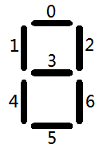

Project Euler 315
题目
Digital root clocks

Sam and Max are asked to transform two digital clocks into two “digital root” clocks.
A digital root clock is a digital clock that calculates digital roots step by step.
When a clock is fed a number, it will show it and then it will start the calculation, showing all the intermediate values until it gets to the result.
For example, if the clock is fed the number \(137\), it will show: “137“ → “11“ → “2“ and then it will go black, waiting for the next number.
Every digital number consists of some light segments: three horizontal (top, middle, bottom) and four vertical (top-left, top-right, bottom-left, bottom-right).
Number “1“ is made of vertical top-right and bottom-right, number “4“ is made by middle horizontal and vertical top-left, top-right and bottom-right. Number “8“ lights them all.
The clocks consume energy only when segments are turned on/off.
To turn on a “2“ will cost 5 transitions, while a “7“ will cost only 4 transitions.
Sam and Max built two different clocks.
Sam’s clock is fed e.g. number 137: the clock shows “137“, then the panel is turned off, then the next number (“11“) is turned on, then the panel is turned off again and finally the last number (“2“) is turned on and, after some time, off.
For the example, with number \(137\), Sam’s clock requires:
| “137“: | \((2 + 5 + 4) \times 2 = 22\) transitions (“137“ on/off). |
| “11“: | \((2 + 2) \times 2 = 8\) transitions (“11“ on/off). |
| “2“: | \((5) \times 2 = 10\) transitions (“2“ on/off). |
For a grand total of 40 transitions. Max’s clock works differently.
Instead of turning off the whole panel, it is smart enough to turn off
only those segments that won’t be needed for the next number.
For
number 137, Max’s clock requires:
| “137“: | \(2 + 5 + 4 = 11\) transitions
(“137“ on) \(7\) transitions (to turn off the segments that are not needed for number “11“). |
| “11“: | \(0\) transitions (number
“11“ is already turned on correctly) \(3\) transitions (to turn off the first “1“ and the bottom part of the second “1“; the top part is common with number “2“). |
| “2“: | \(4\) transitions (to turn on the
remaining segments in order to get a “2“) \(5\) transitions (to turn off number “2“). |
For a grand total of \(30\) transitions.
Of course, Max’s clock consumes less power than Sam’s one.
The two clocks are fed all the prime numbers between \(A = 10^7\) and \(B = 2\times10^7\).
Find the difference between the total number of transitions needed by Sam’s clock and that needed by Max’s one.
解决方案
对于一个数位上的数码管，有\(2^7\)种不同的使用情况。每一种使用情况用一个\(7\)位二进制数表示。如图下图是一种比较随机的编码。如果第\(i\)个管是亮的，那么这个二进制数的第\(i\)位为\(1\)，否则为\(0\)。

不过实际上，我们只使用了其中的\(10\)种情况，用来表示\(0\sim9\)。我们用\(b[i]\)表示这个数位的显示情况。
如果一个数\(x\)要变成\(y\)，那么能够节省能量的地方满足：变化前和变化后对应的两个数位\((x_i,y_i)\)，有\(b[x_i]\&b[y_i]>0\)。此时\(b[x_i]\&b[y_i]\)的比特数就是节省的能量数。
需要注意的是，最终答案需要乘\(2\)，因为它减少了从亮到灭和从灭到亮的两个过程。
代码
1 |
|